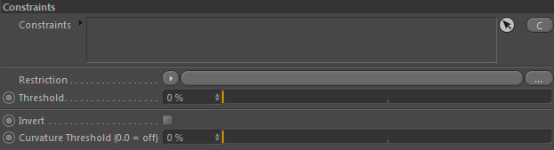
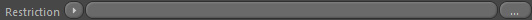
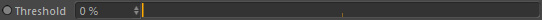

Parameters
Constraints
Constraints

Constraints

Restrict and alter the strength of the resulting emission by using constraints.
Please see Constraints for more information.
Restriction

This allows for texture based emission (greyscale). Colors below the threshold value mean no emission.
As this is a restriction value, any colors sampled from the given shader/texture will be converted into greyscale value.
Threshold

Defines the texture based emission threshold. Locations where colors are below this threshold value result in no emission.
Invert
Inverts the mesh curvature based emission.
Areas with curvature lower than the threshold will then have emission instead of high curvature areas.
Note: The mesh node linked must have mesh curvatures generated to make this work. See MOP::Curvature.
Curvature Threshold (0.0 = off)
Set this value higher than 0.0 to activate curvature based emission.
Higher threshold value will restrict emission more and more to areas with high curvature.
Note: The mesh node linked must have mesh curvatures generated to make this work. See MOP::Curvature.